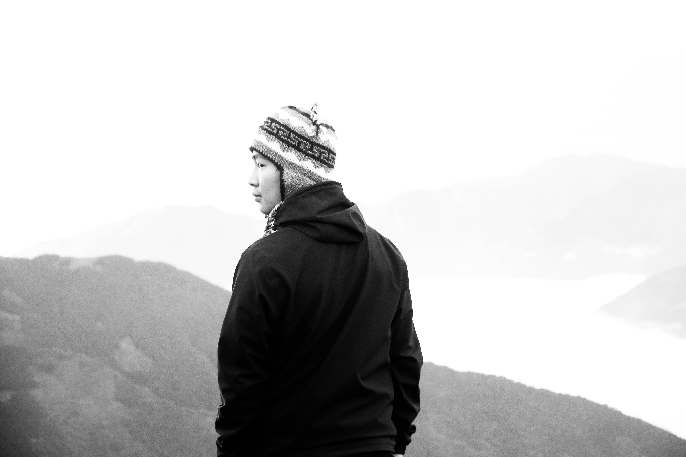

Biography

Ujjwal Rana Magar is a Nepalese photographer, filmmaker, and marine biologist who has documented the beauty and the plight of Nepal for over five years. As an assignment photographer for National Geographic magazine, Rana captures the imagination of a global audience.
Rana is uniquely qualified to create his brand of documentary photography which informs and creates an emotional connection with wild subjects in extreme conditions. His work delivers audiences to cultures and landscapes of Nepal witnessed by few. Rana’s sensitive and evocative imagery has garnered over 10 of the highest awards given to any photographer in his field, including the BBC Wildlife Photographer of the Year and the prestigious World Press Photo for Photojournalism.